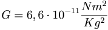

De: La Frikipedia, la enciclopedia extremadamente seria.
De: La Frikipedia, la enciclopedia extremadamente seria. De: La Frikipedia, la enciclopedia extremadamente seria.
Se entiende por gravedad una fuerza creada por Dios para evitar que los habitantes del universo se escapen de él.
El Lute la inventó mientras se caia por enésima vez, y pudo determinar , esta cifra se puede explicar sencillamente, cada 0'00000000000667 saltos la gravedad de ateísta se explica como la fuerza que ejerce la gravedad sobre un cuerpo para que se le caigan 6,67 *10-11 pelos del cuerpo.
Los ilustrados del siglo XIX descubrieron que si tu peso terrestre es menor que el de un extraterrestre o tu fuerza es mayor a 9,8N, puedes evitar la gravedad como quieras. Para pesar menos tienes que untarte el cuerpo con sangre de pájaro o comer ración de gaviotas durante dos meses y tres días incluyendo los picos (usando azúcar). Una vez evitada la gravedad podrás visitar a los vecinos de al lado.
Hoy en dia, es de sobra conocido que la teoría de la gravitación universal (así como la de la relatividad de Einstein) no son mas que falacias.
La teoría que realmente explica la caida de los cuerpos es la universidades se niegan a enseñar.
El teorema del castor eléctrico demuestra que la fuerza de un pájaro es equivalente a la de cinco tractores juntos coordinados mediante permutaciones perfectas.
Algunas teorías propuestas por los seguidores del Monstruo de Spaghetti Volador afirman literalmente que: "La gravedad no existe, es la Tierra la que te chupa".
Según el físico Stephen Hawking, fué él quien inventó la gravedad. Se sabe a ciencia cierta que la ha patentado, por lo que su uso fuera del planeta sin su consentimiento explícito puede originarle al físico millones de dólares
los emos no creen en la gravedad
| | ||||
|
Materia
Magnitudes
Mecánica
Cinética y Dinámica
Energía
Física Cuántica y Nuclear
Científicos
|
Autor(es):